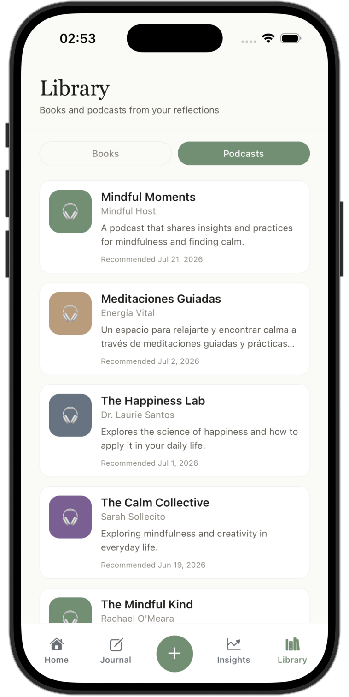

01
Write, or speak
A gentle prompt when you want one, a blank page when you don't. Voice journaling for the days typing feels like too much.
Yutova is a journaling companion that helps you understand what you're feeling — and gently notices what keeps repeating, without ever trying to fix you.

No script, no template — just space to think out loud.
Reflections are generated privately from what you write in that moment — not from a shared profile, and never used to train Yutova's models.
Yutova doesn't. It remembers what you've written — not to keep score, but to notice what keeps repeating.
A gentle prompt when you want one, a blank page when you don't. Voice journaling for the days typing feels like too much.
Yutova reflects back what it noticed, in language that sounds like a thoughtful friend — never a diagnosis, never advice you didn't ask for.
The same worry before the same Monday. The same relief after the same walk. Threads you'd never catch in one entry, surfaced gently across many.
Journal freely, revisit meaningful reflections, understand emotional patterns, and keep useful resources close.
Every entry adds to a thread only you can see. When a pattern resurfaces, Yutova connects it — quietly, and only when it's useful.
This is the third time a Monday conversation has come with the same tightness before it happens, not during. Would it help to name, once, what you actually need to say — before the dread builds?
A few honest minutes can be enough to hear what your mind has been trying to say.
A focused experience designed to make reflection feel natural rather than demanding.
Go deeper without facing an intimidating blank page.
Speak naturally when writing does not feel right.
See recurring emotions, themes, and meaningful changes.
Yutova notices when something genuinely repeats, gently.
Return to past entries and remember how far you have come.
Keep books, podcasts, exercises, and thoughtful resources nearby.
Continue the conversation beyond your journal with a calm, curated library of books, podcasts, and exercises.
Find relevant reading without endless searching.

Listen to thoughtful voices that support reflection and growth.

Simple, guided practices for when your mind needs a pause.

Yutova helps you slow down, notice what matters, and carry one useful insight into your next day.
No trial tricks, no forced sign-up before you've written a word.
Everything you need to begin a daily practice.
For the flexible month-to-month conversation with yourself.
For the longer conversation with yourself. Billed yearly.
Yutova is launching soon on iOS and Android.
They're used to generate your reflections — never to train an AI model, and never shared beyond what's needed to create them.
Yutova is a self-reflection tool, not a therapist, medical service, or replacement for professional mental health care. If you're in crisis, please reach out to a crisis line or a professional.
Yutova is launching soon. We'll let you know when it's ready to download.